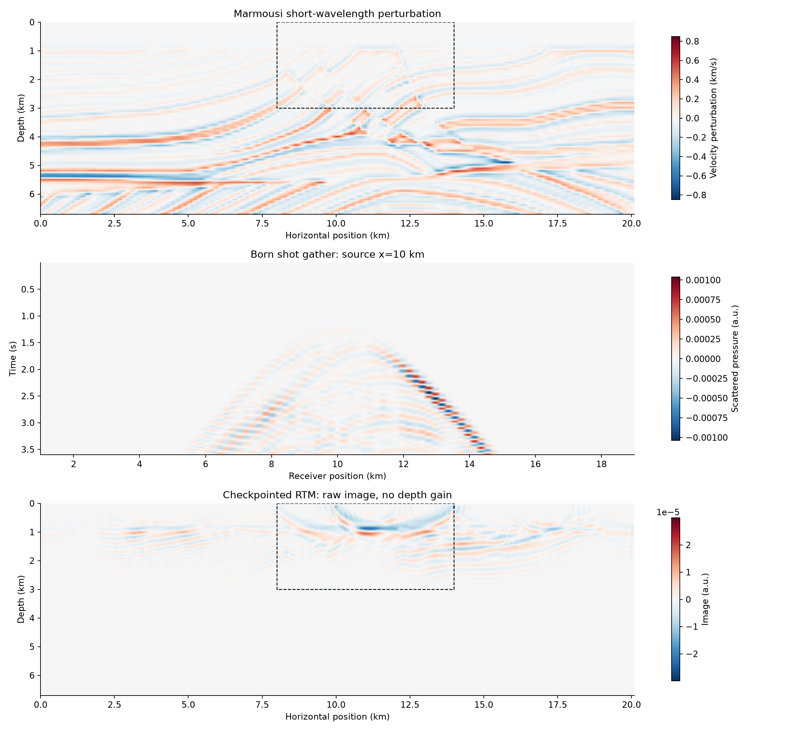

AMAT5315 / WEEK 05 / 2026-09-30
从自动微分到地下成像
JAX 手写求导 → Rust 波传播 → Enzyme 伴随 → Treeverse → Marmousi
技术提交材料已就绪 · 严格复核缺口已全部关闭
技术验收已通过，用户已授权按 PDF 要求提交至练习仓库。课堂展示、本人阅读理解与云账户准备保留为本人事项。
2.1 km反射层成像峰值，与输入深度一致
1.99 × 10⁻¹⁶Born / adjoint 转置相对误差
6 个状态Marmousi 保存状态 20.8 MB；不等于总内存
5 · Marmousi
上部倾斜结构可辨认。整幅图保持同一幅度标尺，无深度增益；深部仍弱。

marmousi.png你审核时需要确认什么
能否解释共享梯度为什么相加、完整状态为什么包含两个波场、一次 Enzyme JVP/VJP 怎样串联到整条轨迹，以及重放为什么不重复累加图像。
图像是 JᵀJm，能够定位结构，但有限带宽和观测覆盖限制了幅度与分辨率。数值检查通过不替代本人理解或老师验收。
下次课为 10 月 14 日。云账户应在老师说明费用后由本人注册与验证支付；GPU 等 Week 6 代码准备好再租。